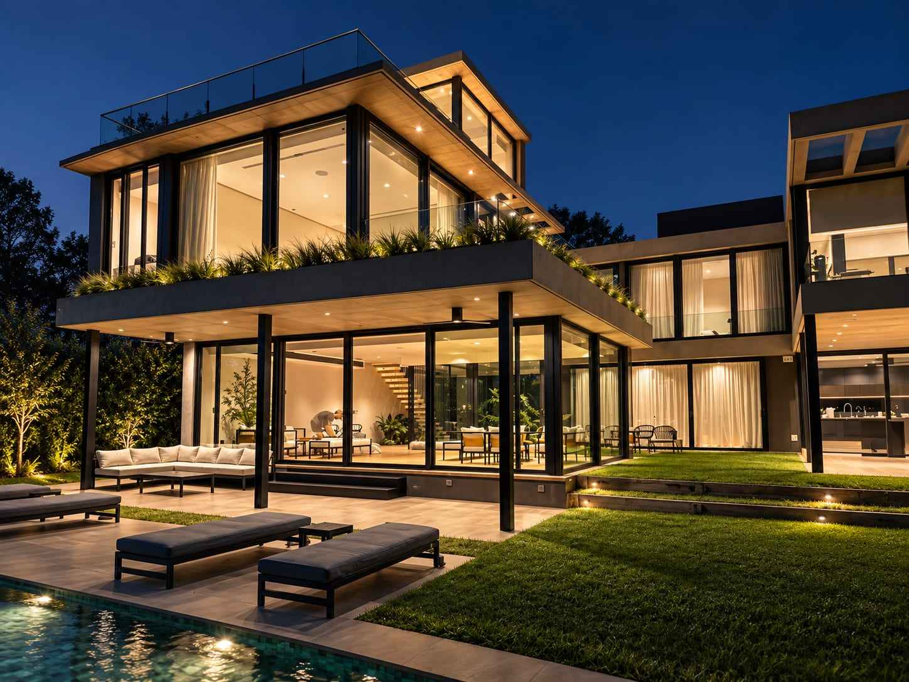
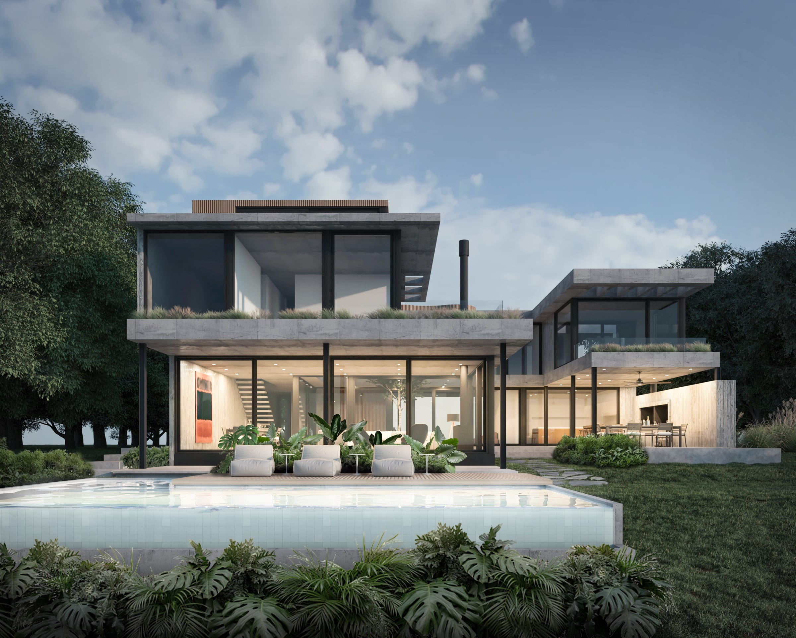
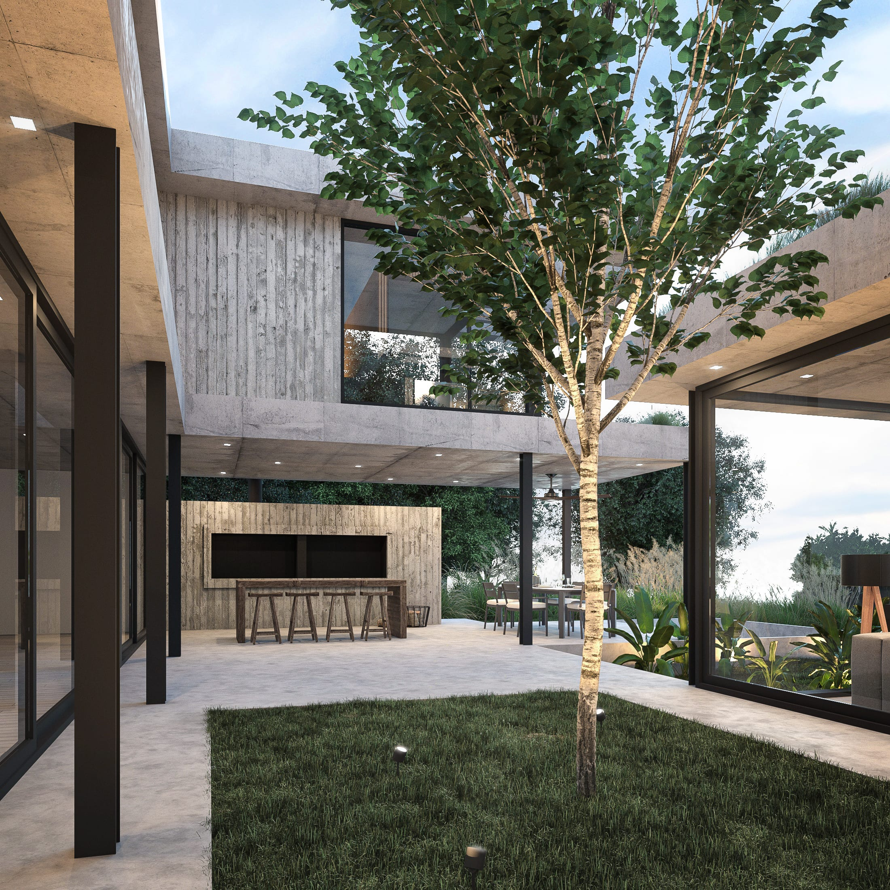
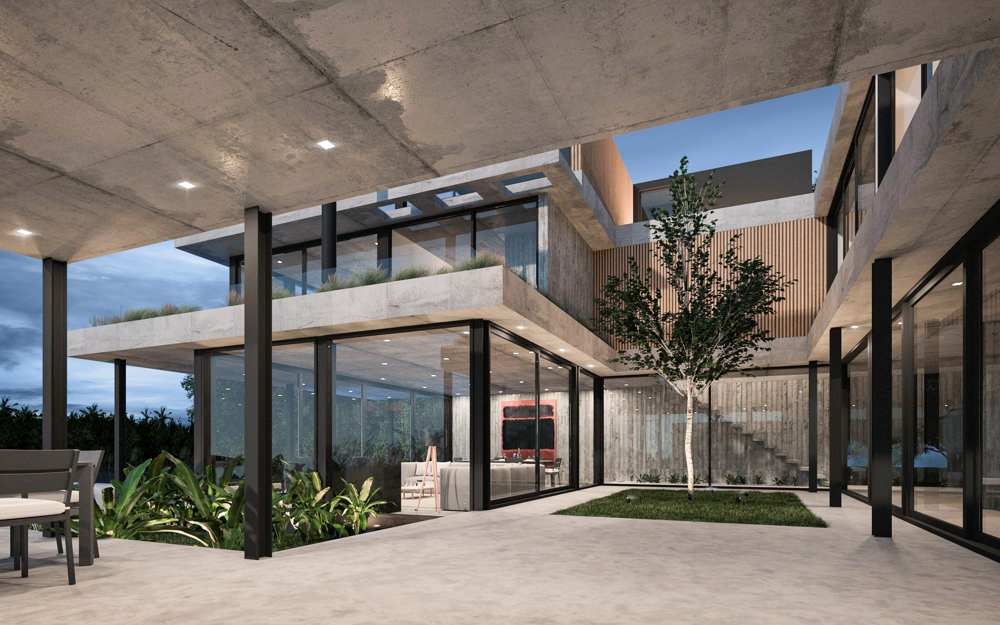
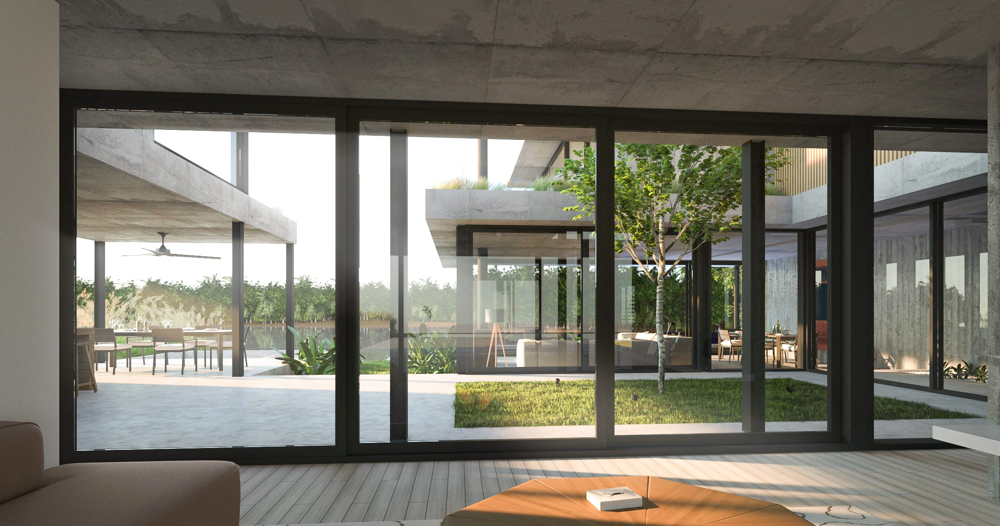
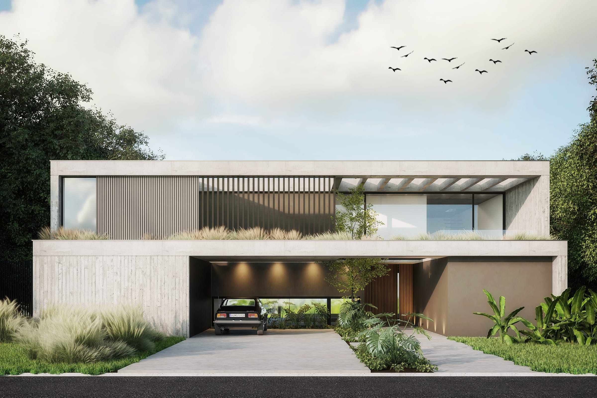
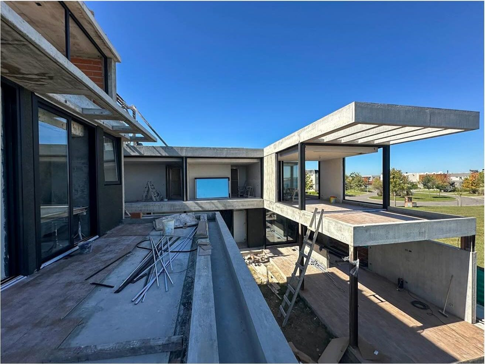
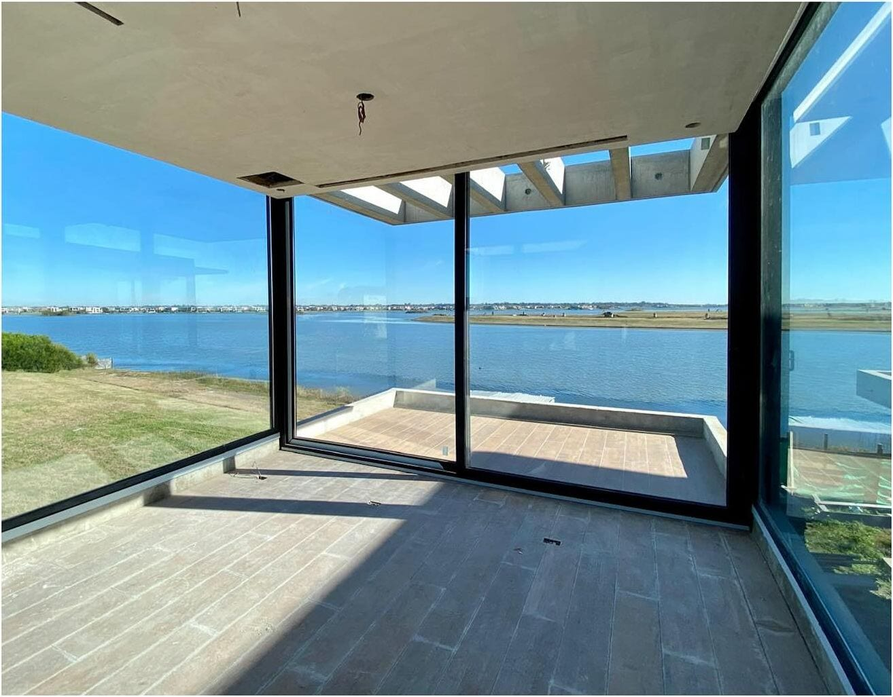
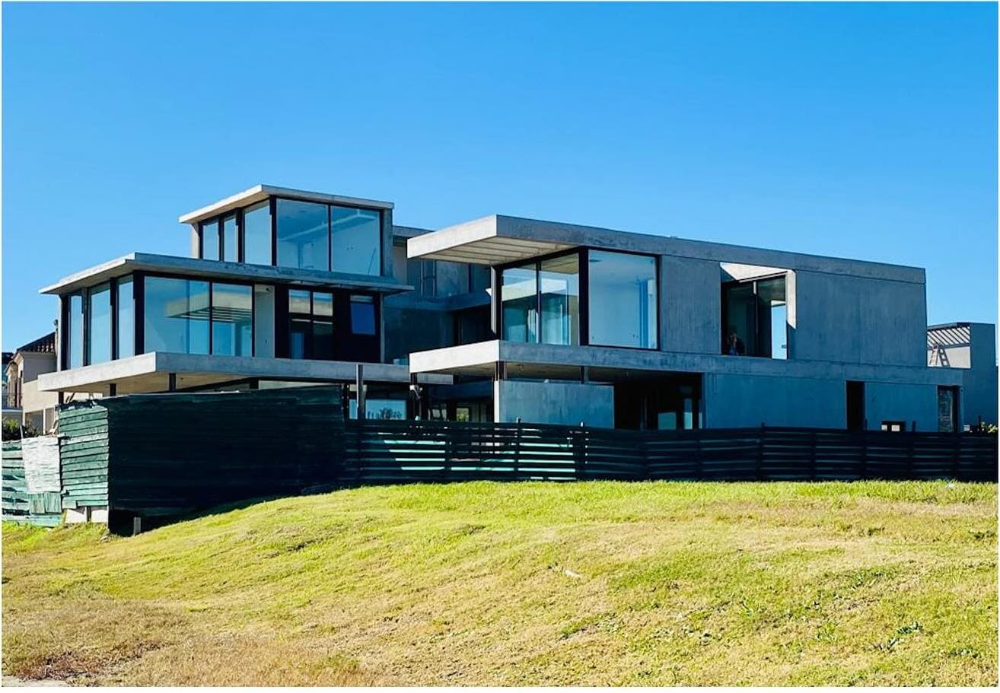
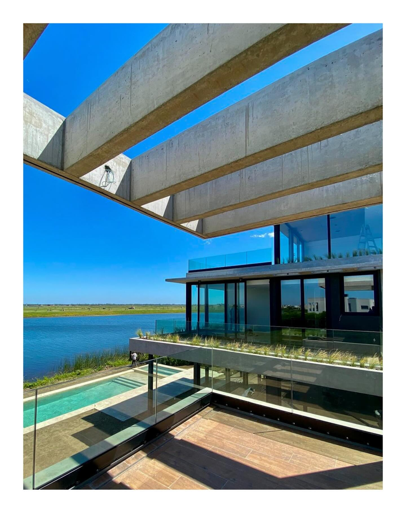

Puertos del Lago I
Puertos del Lago I is a single-family house within the Puertos del Lago development in Buenos Aires, developed at ID Construcciones.
At ID Construcciones, my involvement ran from design development through permitting, with site-architect duties until I relocated to Spain. The house was later altered from the original design after my departure.